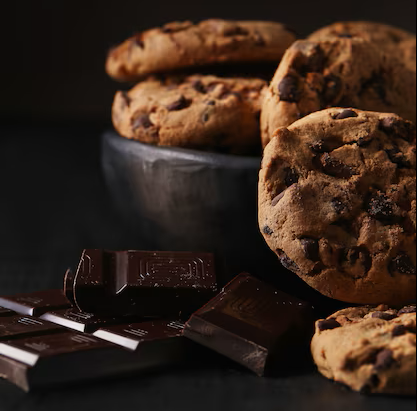

Przepisy

Proste ciasteczka czekoladowe
Czas przygotowania: 30 minut
Poziom trudności: Łatwy
Porcje: Około 20 ciasteczek
Składniki:
- 1 szklanka mąki pszennej
- 1/2 szklanki cukru
- 1/2 kostki masła (100 g)
- 1 jajko
- 1 łyżeczka proszku do pieczenia
- 100 g czekolady gorzkiej (posiekanej na małe kawałki)
Przygotowanie:
- Rozgrzej piekarnik do 180°C i wyłóż blachę papierem do pieczenia.
- W misce wymieszaj miękkie masło z cukrem, aż będzie puszyste (możesz użyć miksera).
- Dodaj jajko i wymieszaj.
- Wsyp mąkę, proszek do pieczenia i posiekaną czekoladę – wymieszaj wszystko łyżką.
- Formuj małe kulki z ciasta, układaj je na blaszce i lekko spłaszcz.
- Piecz przez 10-12 minut, aż ciasteczka będą złociste.
- Ostudź i zajadaj!
Wskazówka: Jeśli lubisz bardziej miękkie ciasteczka, piecz je krócej, np. 8 minut.

Muffinki z bananami
Czas przygotowania: 40 minut
Poziom trudności: Łatwy
Porcje: 12 muffinek
Składniki:
- 2 dojrzałe banany
- 1,5 szklanki mąki pszennej
- 1/2 szklanki cukru
- 1/3 szklanki oleju
- 1 jajko
- 1 łyżeczka proszku do pieczenia
- 1 łyżeczka cynamonu (opcjonalnie)
Przygotowanie:
- Rozgrzej piekarnik do 180°C i przygotuj foremkę na muffinki (wyłóż papilotkami).
- Rozgnieć banany widelcem w misce.
- Dodaj olej, jajko i cukier – wymieszaj.
- Wsyp mąkę, proszek do pieczenia i cynamon, wymieszaj, ale nie za długo, żeby ciasto nie było za gęste.
- Napełnij foremki ciastem do 2/3 wysokości.
- Piecz przez 20-25 minut, aż muffinki będą złociste.
- Ostudź i gotowe!
Wskazówka: Możesz dodać do ciasta kawałki czekolady albo orzechy, jeśli lubisz.


Sernik na zimno z truskawkami
Czas przygotowania: 30 minut + 3 godziny w lodówce
Poziom trudności: Średni
Porcje: 8 kawałków
Składniki:
- 200 g herbatników
- 80 g masła (rozpuszczonego)
- 500 g serka homogenizowanego (waniliowego)
- 1 galaretka truskawkowa
- 1 szklanka wrzątku
- 200 g truskawek (świeżych lub mrożonych)
Przygotowanie:
- Rozkrusz herbatniki na drobne kawałki (możesz użyć blendera) i wymieszaj z rozpuszczonym masłem.
- Wyłóż masę na dno tortownicy (ok. 20 cm), ugnieć i wstaw do lodówki.
- Galaretkę rozpuść w szklance wrzątku i odstaw do ostygnięcia.
- Serek wymieszaj z ostudzoną galaretką, a potem wylej na spód z herbatników.
- Na wierzch poukładaj truskawki (jeśli są mrożone, najpierw je rozmroź).
- Wstaw do lodówki na 3 godziny, aż sernik stężeje.
- Smacznego!
Wskazówka: Jeśli nie lubisz truskawek, możesz użyć malin albo borówek.